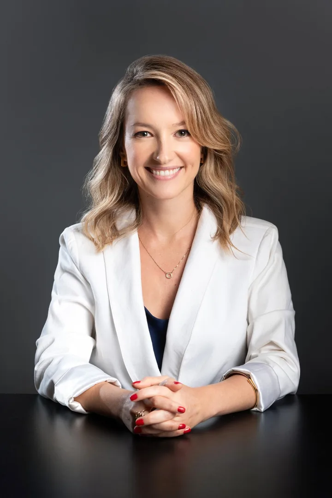

Comunidade
Um espaço só de membros para preparar os casos, continuar as discussões, trocar materiais e conhecer quem atende sono de verdade. Contatos viram colegas de confiança, e você deixa de ser só um nome numa lista.
Seu raciocínio também não deveria estar.
Duas quartas por mês, uma mesa.
Casos reais na Mesa Clínica do Sono, ciência com contexto na Atualização Aplicada e profissionais que olham o mesmo paciente por outros ângulos.
Tem um lugar vago nessa mesa.
Quero ocupar meu lugar à mesa
Você termina a formação, volta para o consultório e aparece o paciente que não responde como deveria. A dúvida fica rondando: sigo com a conduta ou já é hora de outro profissional entrar?
Aí você procura um artigo, manda mensagem para um colega, assiste a uma aula solta, espera o próximo congresso. Tudo ajuda um pouco, nada resolve o principal: um lugar fixo para colocar o caso na mesa e ouvir quem pensa diferente de você.
O Clube de Estudos do Sono existe para ocupar esse espaço.
Situações que travam qualquer profissional do sono, de qualquer área. Ao longo do ano elas vão para a mesa, uma de cada vez.
O exame veio normal e o paciente diz que está exausto.
Saber onde mais procurar quando o laudo não explica o cansaço.
A saturação cai à noite, mas o IAH é baixo.
Ler a oximetria além do número e decidir o que fazer com ela.
Ele usa o CPAP todas as noites e continua com sono.
Ter um raciocínio para o que vem depois da adesão.
Ela não quer o CPAP. E ponto.
Ter o que oferecer e saber conduzir essa conversa.
A dor piora o sono e o sono piora a dor.
Entender por onde começar e com quem dividir o caso.
Idoso com cinco remédios. Paciente pós-AVC. Paciente com Parkinson.
Enxergar onde o sono entra no paciente complexo.
A mulher que parou de dormir na menopausa. A gestante que começou a roncar.
Reconhecer o que muda no sono em cada fase da vida da mulher.
O paciente com doença pulmonar que piora à noite.
Separar o que é da doença e o que é do sono.
Ele chega com os gráficos do relógio e quer uma resposta.
Saber o que esses dados dizem, o que não dizem e como explicar.
Ansiedade, cafeína, treino pesado: todo mundo tem uma opinião.
Responder ao paciente com evidência, não com achismo.
Um caso real é aberto na sua frente: o que chamou atenção, as hipóteses, as lacunas e o momento em que outra perspectiva muda a leitura do caso. Você pergunta, discorda, confronta a sua decisão com a da mesa e sai enxergando melhor os próximos pacientes.
Artigos e evidências escolhidos a dedo, às vezes com especialistas convidados. Para cada um, as mesmas perguntas: o que a evidência mostra, para quem se aplica, quais são os limites e que peso deve ter na prática. Você para de tentar acompanhar sozinho tudo o que sai.

O mesmo caso pode envolver respiração, dor, função, comportamento, estruturas orofaciais e adesão ao tratamento. Ninguém precisa dominar o trabalho de todas as profissões, mas todo mundo precisa saber onde termina o seu e onde começa o do outro, para conversar e encaminhar melhor.
Por isso o Clube reúne fisioterapeutas, dentistas, médicos, fonoaudiólogos, biomédicos e outros profissionais da saúde que atendem o sono.
Ao longo do ano também entram formatos especiais: Mesa das Interfaces, Mesa das Controvérsias, Grandes Casos Clínicos, painéis multiprofissionais, desafios de raciocínio e retrospectivas científicas.

Um espaço só de membros para preparar os casos, continuar as discussões, trocar materiais e conhecer quem atende sono de verdade. Contatos viram colegas de confiança, e você deixa de ser só um nome numa lista.
Você pode enviar um caso seu para avaliação. Apresenta o contexto e o ponto exato da dúvida, e a mesa ajuda a pensar. Participar é uma oportunidade, nunca uma obrigação.
Quem participa e cumpre os critérios pode apresentar casos em experiências selecionadas, fazer collabs e entrar na Vitrine Profissional, com foto, formação, área de atuação, cidade e contatos. É visibilidade dentro do ecossistema Fisioterapeutas do Sono, sem promessa de pacientes ou contratos.
Curadoria de materiais, até 15% de desconto em formações elegíveis, acesso antecipado a novas formações e experiências e as gravações dos encontros enquanto a assinatura estiver ativa.
Três fisioterapeutas do sono que vivem a clínica, a pesquisa e o ensino, e que abrem a mesa para outras profissões.



Alunos da Fisioterapeutas do Sono têm 20% de desconto em qualquer plano: use o botão “Sou aluno FS”.
Jornada completa · 12 meses
12x R$ 137
ou R$ 1.644 à vista
Continuidade · 6 meses
6x R$ 157
ou R$ 942 à vista
Flexibilidade
R$ 247/mês
sem compromisso de ciclo longo
Você tem 7 dias para participar, conhecer a comunidade e sentir se o Clube faz sentido para você. Se não fizer, é só pedir o cancelamento dentro desse prazo, conforme os termos da garantia da compra.
* Itens que dependem de elegibilidade, participação, disponibilidade, programação e regras vigentes.
É uma assinatura para quem já trabalha com sono e quer continuar evoluindo depois da formação. Todo mês acontecem dois encontros ao vivo: a Mesa Clínica do Sono, com casos reais, e a Atualização Aplicada, com artigos e convidados. Entre um encontro e outro, a discussão continua numa comunidade exclusiva de membros. Não é um curso com começo, meio e fim: é um lugar fixo para estudar, discutir e trocar ao longo do ano.
Não. O Clube é multiprofissional. Participam fisioterapeutas, dentistas, médicos, fonoaudiólogos, biomédicos e outros profissionais da saúde cuja atuação ou interesse passa pelo sono. A ideia é justamente juntar quem olha o mesmo paciente por ângulos diferentes.
Sim. Os casos são discutidos pelo raciocínio clínico, e cada profissão traz a sua leitura. Quando um ponto é muito específico de uma área, ele é explicado para que todos entendam onde aquilo entra no cuidado do paciente. Você não precisa dominar a técnica do outro, precisa entender quando e como conversar com ele.
Não. O Clube dá continuidade, atualização e discussão a partir de uma base que você já tem. Se você ainda precisa construir os fundamentos, o caminho mais seguro é começar por uma formação estruturada. A equipe pode indicar qual faz sentido para a sua profissão e o seu momento: é só chamar no WhatsApp.
Pode ser, desde que você já tenha base em saúde e interesse real pela área. Você vai acompanhar casos e discussões de profissionais mais experientes, o que acelera muito o raciocínio. Só não espere uma aula do zero: o Clube parte do pressuposto de que você já conhece o básico. Se estiver em dúvida, fale com a equipe antes de assinar.
É exatamente para você. A formação organiza a base; o Clube ocupa o espaço que vem depois, quando os casos difíceis aparecem e a ciência continua mudando. E quem é aluno da Fisioterapeutas do Sono tem 20% de desconto em qualquer plano.
No curso gravado você assiste sozinho a um conteúdo fechado. No Clube você participa de discussões ao vivo, leva perguntas, confronta o seu raciocínio com o de outros profissionais e acompanha a evidência que vai saindo ao longo do ano. As gravações existem, mas são um apoio: o valor está na mesa.
As lives do Bastidores são abertas e tratam de uma questão por vez, para quem está conhecendo o tema. O Clube é fechado para membros, trabalha casos reais com profundidade, tem a Atualização Aplicada com curadoria científica, comunidade, envio de casos, convidados e benefícios em formações. São propostas diferentes e complementares.
São dois encontros ao vivo por mês, até 24 no ano. Um é a Mesa Clínica do Sono, em que um caso real é discutido do começo ao fim: hipóteses, lacunas e decisões confrontadas com a mesa. O outro é a Atualização Aplicada, em que artigos e evidências são analisados pelo que importa na prática: para quem se aplicam, quais os limites e que peso devem ter. Além disso, ao longo do ano acontecem experiências especiais, como painéis multiprofissionais e a Mesa das Controvérsias.
Os encontros acontecem às quartas-feiras, a cada 15 dias, ao vivo e online. A agenda completa e o horário de cada encontro ficam disponíveis para os membros com antecedência, para você se organizar.
Não. O ao vivo é recomendado, porque é ali que você pergunta e participa da discussão, mas ninguém precisa estar em todos. Quando houver gravação, você assiste depois, no seu tempo.
Sim. As gravações ficam disponíveis enquanto a sua assinatura estiver ativa, de acordo com as regras e a disponibilidade do acervo.
O Clube foi pensado para quem atende. São dois encontros por mês, não uma grade de aulas para maratonar. Na prática, ele economiza o tempo que você gastaria procurando artigos sozinho, tentando separar o que é novidade do que é evidência relevante e esperando o próximo congresso para tirar uma dúvida. Se perder um encontro, a gravação e a comunidade estão lá.
O acesso às gravações segue as regras e a disponibilidade do acervo do Clube. Se for importante para você assistir a um encontro específico que já aconteceu, fale com a equipe antes de assinar.
Sim, há um recesso de fim de ano entre dezembro e janeiro. As datas ficam na agenda que os membros recebem.
Sim. Você envia o caso para avaliação, com o contexto e o ponto exato da dúvida. O envio não garante que ele será apresentado: a escolha considera tema, relevância, agenda e adequação ao encontro.
Não. Participar das discussões e apresentar casos são oportunidades, não obrigações. Muita gente começa só ouvindo e vai se sentindo à vontade aos poucos.
Os casos são discutidos sem dados que identifiquem o paciente. Quem envia um caso recebe a orientação de retirar nome, documentos e qualquer informação pessoal antes de compartilhar.
É um ambiente exclusivo para membros, onde os casos são preparados, as discussões continuam depois dos encontros e circulam perguntas, materiais selecionados e atualizações. É também onde você conhece profissionais de outras áreas e de outras cidades que atendem sono.
Sim. Flávia, Liliane e Rafaela conduzem os encontros, e a cada tema entram convidados, painéis e discussões multiprofissionais. Já passaram pela mesa, por exemplo, Alexandre Annibale (dentista), Babak Mokhlesi (médico), Dani Filócomo, Mariana Escaleira e Georgea Brito (fisioterapeutas) e Gabriel Pires (biomédico).
Sim, sempre que fizerem parte da curadoria e da discussão do encontro. A proposta não é entregar uma biblioteca infinita para você ler sozinho, e sim selecionar o que merece atenção e discutir o que aquilo muda na prática.
São sínteses visuais dos encontros: o raciocínio do caso organizado numa página, com os pontos de decisão e o que levar para o consultório. Servem para revisar rápido e consultar depois.
É um espaço de visibilidade no ecossistema Fisioterapeutas do Sono para membros que cumprirem os critérios definidos, com foto, formação, área de atuação, cidade e canais de contato. Ela aumenta a exposição do seu trabalho, mas não é promessa nem garantia de pacientes, contratos ou indicações.
O Clube não funciona como um curso com certificado de conclusão: ele é um espaço contínuo de discussão e atualização. Se você precisa de alguma comprovação de participação, fale com a equipe.
Se você quer viver o Clube de verdade, o anual é o recomendado: são até 24 encontros, o menor valor por mês (12x de R$ 137) e a trajetória completa de protagonismo e Vitrine Profissional. O semestral é para quem prefere um compromisso de 6 meses (6x de R$ 157). O mensal (R$ 247) é para quem quer flexibilidade e prefere experimentar antes de assumir um ciclo maior.
O mensal dá acesso aos encontros e aos benefícios enquanto a assinatura estiver ativa. O anual foi pensado para 12 meses contínuos, e alguns benefícios de progressão, visibilidade e iniciativas especiais dependem de elegibilidade e permanência. No anual você também paga menos por mês.
Embaixo de cada plano há o botão “Sou aluno FS”. Ele abre um checkout próprio, já com 20% de desconto. Se tiver qualquer dificuldade, chame a equipe no WhatsApp.
O pagamento é feito no checkout seguro da Eduzz. O anual pode ser parcelado em até 12x e o semestral em até 6x no cartão, ou pago à vista. As demais formas de pagamento disponíveis aparecem no próprio checkout.
Sim. Você tem 7 dias para participar, conhecer a comunidade e avaliar se o Clube faz sentido para você. Se não fizer, é só pedir o cancelamento dentro desse prazo, conforme os termos da garantia da compra.
Sim. As regras de cancelamento variam conforme o plano contratado e são informadas com clareza no momento da compra. Se quiser entender antes de assinar, a equipe explica pelo WhatsApp.
Os planos funcionam como assinatura. As condições de renovação de cada plano aparecem no checkout, e a equipe pode tirar qualquer dúvida antes de você assinar.
Sim. Membros podem ter até 15% de desconto em formações elegíveis, conforme as condições vigentes no momento da compra, e acesso antecipado a novas formações e experiências.
Assim que o pagamento é confirmado, você recebe por e-mail as orientações de acesso. Os encontros, as gravações e os materiais ficam na área do aluno, que você também encontra no botão “Já sou aluno”, no topo desta página.
Com a nossa equipe, pelo WhatsApp. Pode perguntar sobre planos, pagamento, sua profissão ou se o Clube faz sentido para o seu momento.
Fale com a nossa equipe. A gente responde sobre planos, pagamento e se o Clube faz sentido para a sua profissão e o seu momento.